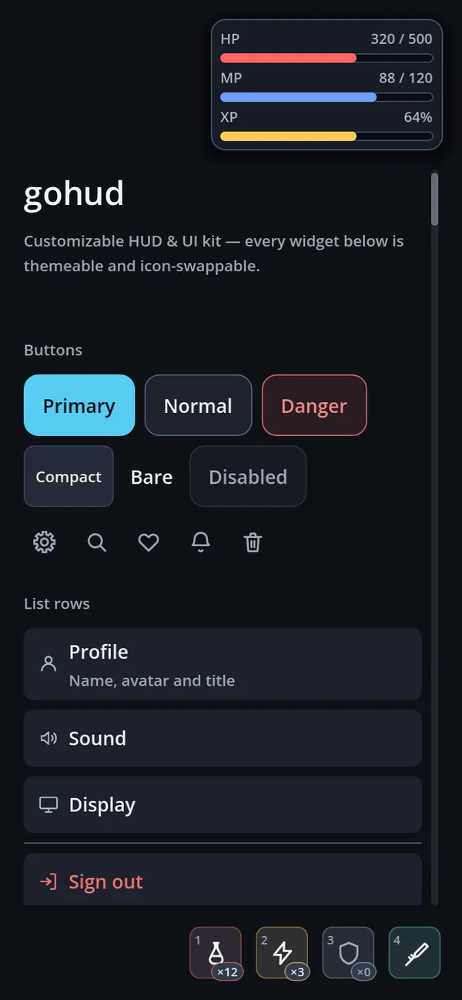
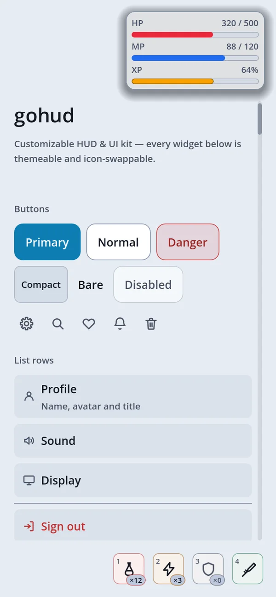
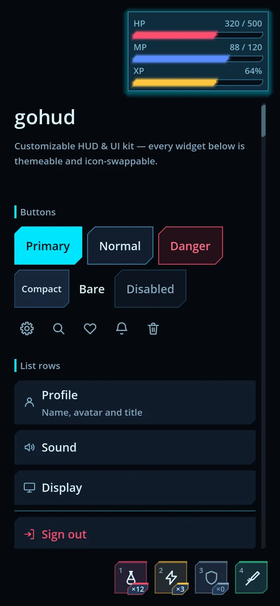
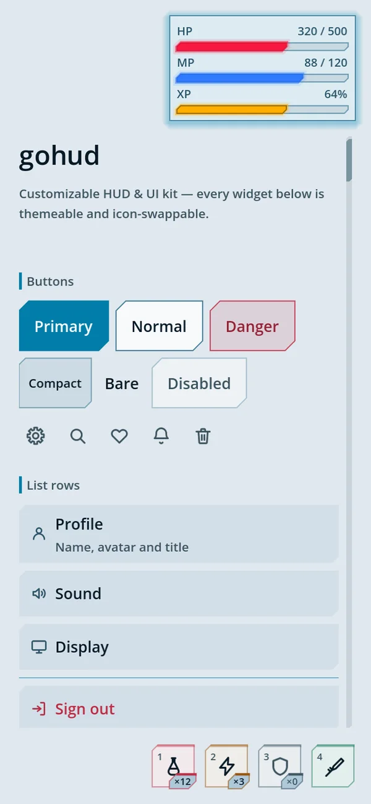
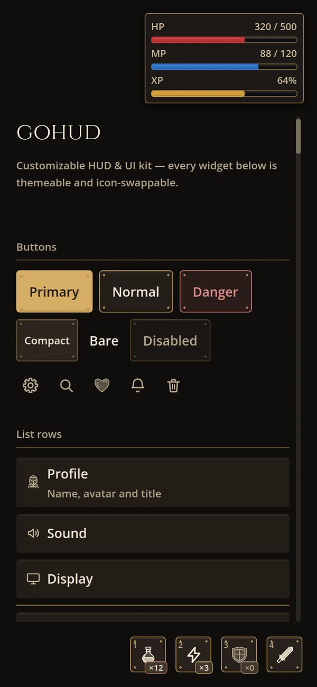
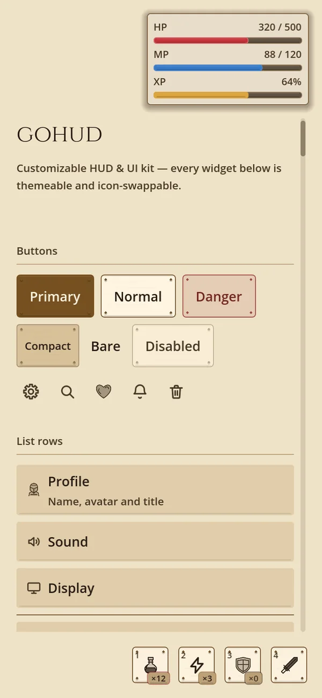

Sebuah preset membundel ketiganya. Kolom yang Anda biarkan kosong kembali ke nilai default.
| Lapis | Menentukan | Cara mengubahnya |
|---|---|---|
Theme |
Warna, ukuran, skala teks, dan bentuk dari segala sesuatu yang digambar mesin — panel tombol, kolom masukan, tab, gambar sakelar | Tulis sendiri sebuah .tres, atau hasilkan dengan tools/make_theme.py |
GoSkin |
Bentuk dari segala sesuatu yang digambar kode — joystick, muka slot cepat, cincin coach mark, chip, kerangka pemuatan, pemisah, judul bagian | Turunkan kelasnya dan timpa hanya metode yang Anda perlukan |
GoIconSet |
Ikon berdasarkan nama — 84 gambar default, atau 16 gambar ukiran set abad pertengahan di atasnya. Sebuah paket tekstur atau font ikon; kode pemanggilnya sama saja | Sediakan satu set, atau timpa beberapa nama saja |
StyleBoxFlat —
setel radiusnya ke nol dan Anda dapat sudut siku-siku; tidak ada apa pun di antaranya. Sudut terpotong diagonal,
satu tepi yang ditebalkan, pendar di luar: mesin tidak menggambar satu pun dari itu. Lagi pula joystick dan coach mark
digambar di dalam _draw(), tempat yang sama sekali tak terjangkau oleh tema.
Memilih salah satu
GoUi.use_preset(GoThemePresets.SCIFI_DARK)Satu baris itu menukar tema, skin, dan ikon. Dari editor, gunakan
Project Settings → Gohud → Theme → Preset; dari resource setelan, GoConfig.preset.
Mempertahankan satu kolom sebagai milik Anda
GoUi.use_preset(GoThemePresets.SCIFI_DARK)
GoUi.config.icons = my_icons # ikon Anda, sisanya dari presetMenyetel theme, skin, atau icons secara eksplisit mengalahkan preset.
Dua belas preset bawaan
| Preset | Panel | Skin · ikon |
|---|---|---|
default_dark · default_light | Panel StyleBoxFlat membulat dengan skala bayangan bertingkat; tombol primer terangkat lalu tenggelam saat ditekan | GoSkin · 84 ikon default |
scifi_dark · scifi_light | Panel GoStyleBoxCut bersudut potong dengan tepi neon dan pendar; penanda fokus GoStyleBoxBracket | GoSkinSciFi — joystick heksagonal · ikon default |
medieval_dark · medieval_light | Bingkai tempaan GoStyleBoxMedieval — besi dan kulit, atau perkamen — dengan paku keling dan ornamen sudut pada menu | GoSkinMedieval · 16 ikon ukiran di atas ikon default |
material_light · material_dark Baru | Material 3 Expressive untuk layar aplikasi — tombol pil 40dp di dalam area sentuh 48dp, dialog 28dp, kartu terisi, kolom bergaris tepi, slider Expressive; komponen aplikasi (bilah navigasi, bilah aplikasi atas, FAB, bilah pencarian, chip, progres, pemilih tanggal) mengikuti token komponen M3 | GoSkinMaterial · ikon default |
kids_light · kids_dark Baru | Untuk anak-anak — kotak mainan: garis tepi tebal dan bibir padat di bawah setiap tombol, yang tenggelam saat ditekan; kolom teks cekung, tab gelembung, bilah jeli; setiap jenis kontrol dengan warna krayonnya sendiri, slot cepat seperti permen, lencana stiker, joystick pelangi, dan grafik berwarna. Ukuran dan font proyek tetap sama. | GoSkinKids · ikon default |
comic_light · comic_dark Baru | Panel buku komik yang digambar oleh GoStyleBoxComic: garis tepi tinta tebal dan bayangan tegas di setiap muka, yang hilang saat muka itu ditekan; toggle, kotak centang, dan pegangan slider bertinta, keterangan judul kuning pada jendela. Lebar garis tepi, ukuran bayangan, dan apakah bayangan tampil sama sekali adalah setelan GoConfig. | GoSkinComic · ikon default |
Kedua belasnya, berdampingan
Layar galeri yang sama dengan hanya nama presetnya yang diganti — tak satu baris pun kode widget yang berbeda. Masing-masing adalah ponsel yang dipegang tegak, 390×844.

default_dark
default_light
scifi_dark
scifi_light
medieval_dark
medieval_light
material_light
material_dark
kids_light
kids_dark
comic_light
comic_darkAbad pertengahan: besi, kulit, dan perkamen
medieval_dark memadukan besi gelap dan kulit dengan emas antik. medieval_light
memakai perkamen dan tinta. Keduanya memakai GoSkinMedieval, widget yang sudah ada, dan 16 ikon
orisinal dengan detail ukiran; ikon navigasi kembali ke set aslinya.
GoUi.use_preset(GoThemePresets.MEDIEVAL_DARK)
# Atau: GoUi.use_preset(GoThemePresets.MEDIEVAL_LIGHT)Pilih presetnya sebelum membuat UI Anda. Penimpaan eksplisit lewat GoConfig.theme,
skin, atau icons tetap diutamakan. Buka
res://addons/gohud/examples/medieval/medieval.tscn lalu tekan F6 untuk melihat lembar karakter,
tas, dan jurnal misi yang berfungsi. Tombol-tombolnya mengganti varian dan membuka rincian benda.


Bingkai menu punya paku keling dan ornamen sudut kecil; HUD yang selalu terlihat mempertahankan tepi yang tenang.
HP, mana, dan stamina memakai isian merah, biru, dan zaitun. Cinzel dibatasi pada judul dan subjudul;
teks isi tetap memakai font induk/default. Font bawaannya menyertakan lisensinya di
assets/fonts/cinzel/OFL.txt.
Set ikon ukirannya menggambar ulang bag, book, box, coin, crown,
flag, heart, key, map, potion, shield,
star, sword, dan user, serta menambahkan scroll dan seal.
Semua nama lainnya kembali ke set default, sehingga close dan settings mempertahankan gambar
defaultnya di setiap preset. Cinzel mencakup aksara Latin; berikan font tersendiri untuk judul yang dilokalkan melalui
shape.fonts.
DPITexture; slot cepat sungguhan memakai skin tersebut; mengubah kenop pada salinan skin
sampai ke slot tanpa menyentuh presetnya; dan beralih kembali memulihkan geometri default serta sci-fi.
Bangun kerajaan Anda sendiri
python3 addons/gohud/tools/new_theme.py kingdom --from medieval_dark
# Sunting themes/palettes/kingdom.json, lalu:
python3 addons/gohud/tools/make_theme.py kingdom
godot --headless --path . --import
# Di GDScript, sebelum membuat widget-nya:
GoUi.use_preset(&"kingdom")Tema JSON bisa mewarisi tema JSON lain. Nilai yang dihilangkan mempertahankan setelan induknya; pewarisan yang melingkar ditolak. Preset hasil generasi mempertahankan set ikon induknya.
| Setelan | Efek |
|---|---|
shape.material | 0: besi · 1: kulit · 2: perkamen. Menentukan guratan pada permukaannya. |
shape.grain_alpha | Opasitas tekstur. Pakai 0 untuk permukaan yang bersih. |
shape.ornament_scale · shape.bevel_strength | Ukuran ornamen sudut menu dan intensitas sorotan bevel. |
shape.fonts | Memetakan peran title, subtitle, caption, body, dan button ke berkas font res:// yang ada di dalam add-on. Peran yang dihilangkan mempertahankan font warisannya. |
skin.dials | Radius slot cepat, tampilnya paku keling, serat, dan sorotan. Tabel lengkap di bawah memuat setiap kenop. |
Material 3: tampilan untuk layar aplikasi Baru
material_light dan material_dark membawa Material 3 Expressive ke gohud — bentuk, ukuran, dan
tipografi komponen M3, dengan setiap angka dibaca dari set token M3 resmi (material-web,
tokens/versions/latest). Pakai keduanya di tempat sebuah layar semestinya terasa seperti aplikasi, bukan menu game:
toko, kotak masuk, halaman akun dan setelan, papan peringkat, aplikasi pendamping.
GoUi.use_preset(GoThemePresets.MATERIAL_LIGHT)
# Atau: GoUi.use_preset(GoThemePresets.MATERIAL_DARK)material_lightmaterial_dark
GoDialogs · material_light
GoDialogs · material_darkApa yang berubah
| Bagian | Dalam Material 3 |
|---|---|
| Tombol | Pil (sudut penuh). Pelatnya setinggi 40dp, di tengah target sentuh 48dp, sehingga area tekannya tidak menyusut; pelat tombol ringkas 32dp. Labelnya memakai Roboto dengan ketebalan 500. |
| Dialog dan lembar | Sudut 28dp (extra-large), padding 24dp, dan judul 24sp — GoDialogs, GoSurface, GoSheet, dan setiap popup yang dibangun di atasnya. |
| Kartu | Kartu terisi dengan sudut 12dp dan padding 16dp. |
| Kolom dan slider | Kolom teks bergaris tepi; slider Expressive dengan pegangannya yang tinggi. |
| Chip dan segmen | Sudut 8dp (small). |
| Komponen aplikasi | GoNavBar, GoAppBar, GoFab, GoSearchBar, chip, GoProgress, dan GoDatePicker mengikuti token komponen M3. |
| Tipografi | Roboto bawaan untuk judul, subjudul, keterangan, dan tombol. Teks isi tetap memakai font proyek Anda, sehingga bahasa Korea, Jepang, Tionghoa, atau Arab tetap tergambar. |
| Opasitas | Setiap panel buram — permukaan M3 itu pejal. (Panel default, sci-fi, dan abad pertengahan 80% buram, sehingga game terlihat di baliknya.) |
| Skin | GoSkinMaterial: laci menjadi side sheet modal M3, muka konsol menjadi floating toolbar M3, banner berada di atas surface_container_low. |
tools/check_contrast.py mengukur kedua tampilan ini seperti tampilan lainnya.
Roboto berlisensi SIL Open Font License 1.1 (assets/fonts/roboto/OFL.txt) dan hanya dipakai oleh preset
Material.
Anak-anak: kotak mainan Baru
kids_light (krem dan persik dengan warna primer ungu anggur) dan kids_dark (dasar biru blueberry, warna primer kuning
cerah, pil mint) adalah tampilan yang dibuat untuk game anak-anak dan aplikasi belajar — tebal, cerah, dan kenyal, jenis
benda yang ingin ditekan jari kecil.
GoUi.use_preset(&"kids_light")
# Atau: GoUi.use_preset(&"kids_dark")kids_lightkids_dark
GoDialogs · kids_light
GoDialogs · kids_darkApa yang berubah
| Bagian | Dalam tampilan anak-anak |
|---|---|
| Setiap muka | Permen jeli, digambar oleh GoStyleBoxJelly: garis tepi tebal, bibir padat di bawah semua yang Anda tekan, badan yang lebih terang di atas dan lebih pekat di bawah, serta kilau putih di kiri atas. Tombol, baris daftar, judul lipat, kolom, bilah, slider, dan panel semuanya memakainya. |
| Saat ditekan | Bibirnya hilang dan mukanya tenggelam ke tempatnya, lalu memipih seperti jeli — lebar dan pipih sesaat, lalu memantul kembali dengan lentur. Ini berjalan pada setiap tombol yang dibuat gohud; reduce_motion mematikannya. |
| Kolom, tab, bilah | Kolom teks adalah jeli yang sama yang dibalik ke dalam — sebuah sumur cekung. Tab berupa gelembung, bilah punya kilau jeli. |
| Warna | Setiap jenis kontrol dengan warna krayonnya sendiri, dipilih oleh generator yang sama seperti setiap tampilan, sehingga setiap gerbang kontras tetap terpenuhi. |
| Jendela | Pita cerah (mint di malam hari) di balik judul jendela — judulnya mengecil, sampai 15, agar tetap satu baris — dan tombol tutup permen yang bulat dalam krayon bahaya dengan silang putih. |
| Bagian skin | GoSkinKids: slot cepat berupa balok permen yang tenggelam selama jeda, lencana berupa stiker, chip dan pil navigasi berupa jeli kecil, avatar berupa permen bulat, joystick-nya pelangi, grafik memakai krayon, peringatan dan pemberitahuan berupa catatan stiker dengan bingkai pejal. |
| Opasitas | Panel, kartu, pemberitahuan, dan popup buram. |

Buat kotak mainan Anda sendiri
python3 addons/gohud/tools/new_theme.py candy --from kids_light
# Sunting themes/palettes/candy.json, lalu:
python3 addons/gohud/tools/make_theme.py candy
GoUi.use_preset(&"candy")Komik: tinta tebal Baru
comic_light (panel putih di halaman krem seperti kertas, warna primer biru kobalt) dan comic_dark (panel batu sabak di
halaman malam, garis tepi krem, warna primer kuning) menggambar setiap muka seperti panel buku komik — garis tepi tinta tebal dengan
bayangan tegas di belakangnya.
GoUi.use_preset(&"comic_light")
# Atau: GoUi.use_preset(&"comic_dark")comic_lightcomic_dark
GoDialogs · comic_light
GoDialogs · comic_darkApa yang berubah
| Bagian | Dalam tampilan komik |
|---|---|
| Setiap muka | Digambar oleh GoStyleBoxComic: warna permukaan di dalam garis tepi tebal berwarna tinta, dan bayangan tegas ke bawah dan ke kanan. Tombol, baris daftar, kolom, tab, bilah, slider, panel, dan popup semuanya memakainya. |
| Saat ditekan | Bayangannya hilang dan mukanya tenggelam ke tempatnya. |
| Kontrol | Toggle, kotak centang, tombol radio, dan pegangan slider juga bertinta, masing-masing dengan bayangan kecilnya sendiri. |
| Jendela | Keterangan kuning di balik judul jendela dan tombol tutup bulat bertinta. |
| Bagian skin | GoSkinComic: slot cepat, chip, lencana, avatar, pemberitahuan, bilah navigasi, FAB, dan sel tanggal bertinta; kenop joystick memberi bayangan; grafik memakai warna primer yang tegas. |
| Opasitas | Panel, kartu, pemberitahuan, dan popup buram; kartu HUD 92% buram. |
Setelan tinta dan bayangan
Tiga setelan GoConfig mengubah setiap muka komik sekaligus. Tidak ada yang dibangun ulang — layar menggambar ulang begitu Anda menyetelnya.
GoUi.config.comic_border_width = 2.0 # garis tepi (dp) — default 3
GoUi.config.comic_shadow_size = 6.0 # bayangan (dp) — default 4
GoUi.config.comic_shadow = false # tanpa bayangan di mana punSatu widget bisa memilih jalannya sendiri, apa pun kata setelannya:
GoStyle.comic_shadow(skip_button, false) # tombol ini datar
GoStyle.comic_shadow(card, true, true) # kartu ini dan semua isinya tetap berbayangan
GoStyle.comic_border(title, 5.0) # garis tepi lebih tebal untuk yang satu ini
Buat komik Anda sendiri
python3 addons/gohud/tools/new_theme.py inked --from comic_light
# Sunting themes/palettes/inked.json, lalu:
python3 addons/gohud/tools/make_theme.py inked
GoUi.use_preset(&"inked")